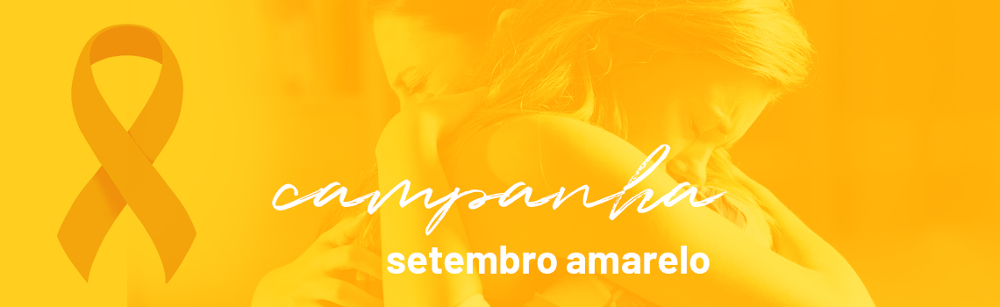

Setembro Amarelo é uma campanha brasileira de prevenção ao suicídio, iniciada em 2015. É uma iniciativa do Centro de Valorização da Vida (CVV), do Conselho Federal de Medicina (CFM) e da Associação Brasileira de Psiquiatria (ABP). O mês de setembro foi escolhido para a campanha porque, desde 2003, o dia 10 de setembro é o Dia Mundial de Prevenção do Suicídio. A ideia é promover eventos que abram espaço para debates sobre suicídio e divulgar o tema alertando a população sobre a importância de sua discussão.
Hoje em dia o suicídio é um problema de saúde pública no Brasil e a sua ocorrência tem crescido entre os jovens. De acordo com os números oficiais, 32 brasileiros se matam por dia. Essa taxa é maior do que a de vítimas de AIDS e da maioria dos tipos de câncer.
 Ficar triste pode ser natural. Entretanto, pensar em desistir não é a melhor opção. Por isso, acredite na vida.Segundo a Associação Catarinense de Psiquiatria, a cor da campanha foi adotada por causa da história que a inspirou:
“Em 1994, um jovem americano de apenas 17 anos, chamado Mike Emme, tirou a própria vida dirigindo seu carro amarelo. Seus amigos e familiares distribuíram no funeral cartões com fitas amarelas e mensagens de apoio para pessoas que estivessem enfrentando o mesmo desespero de Mike, e a mensagem foi se espalhando mundo afora.”O carro era um Mustang 68, restaurado e pintado pelo próprio Mike. Os pais de Mike, Dale Emme e Darlene Emme, iniciaram a campanha do programa de prevenção do suicídio "fita amarela", ou "yellow ribbon", em inglês.
A cor amarela tem o simbolismo da vida, da luz e do sol, o que reflete o propósito da campanha de preservação da vida humana.
{kind=link}